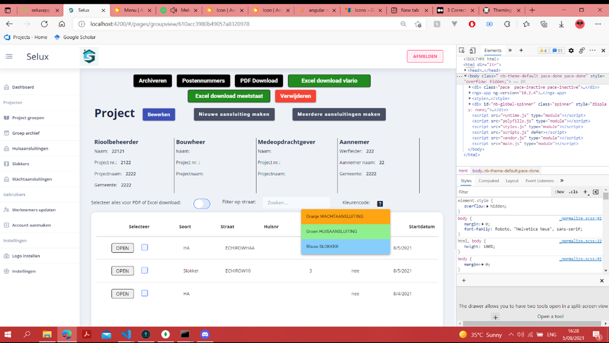
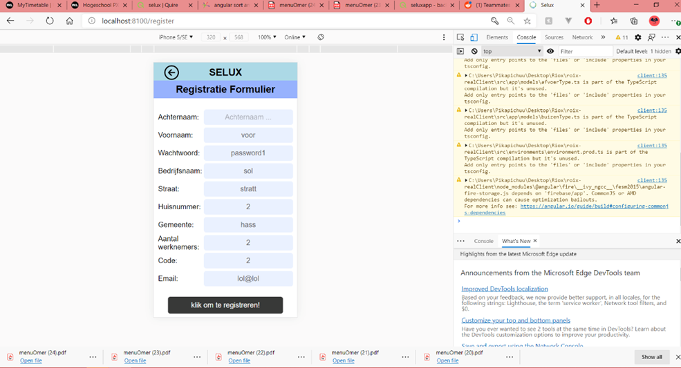
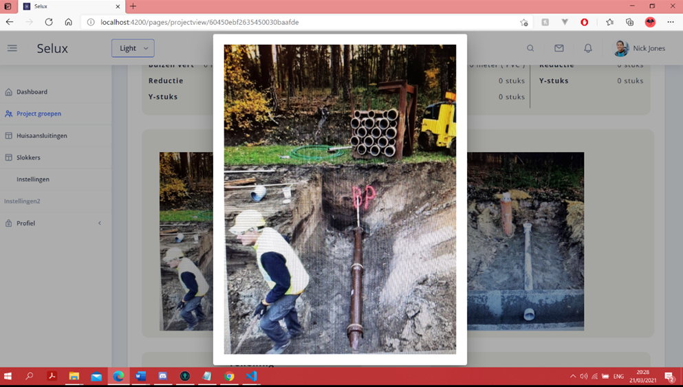
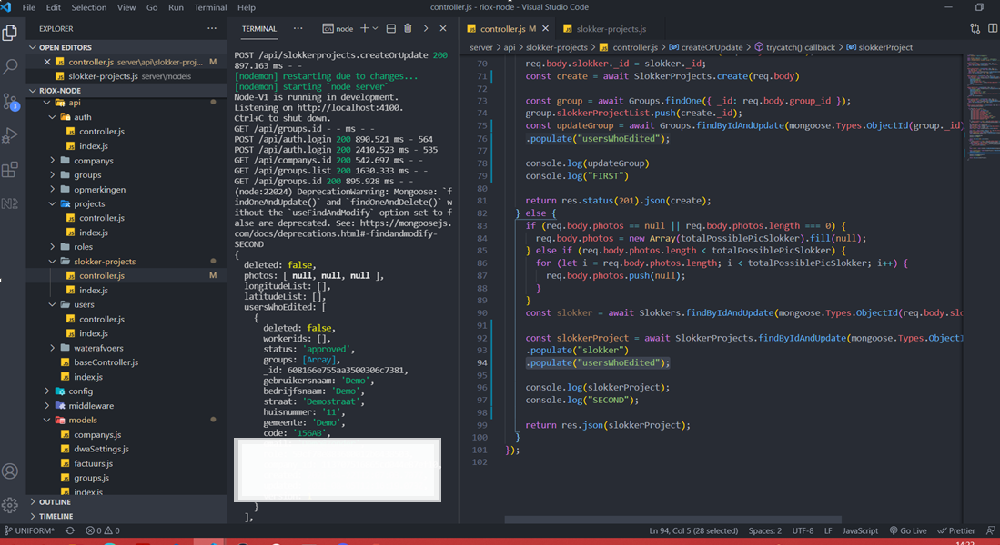
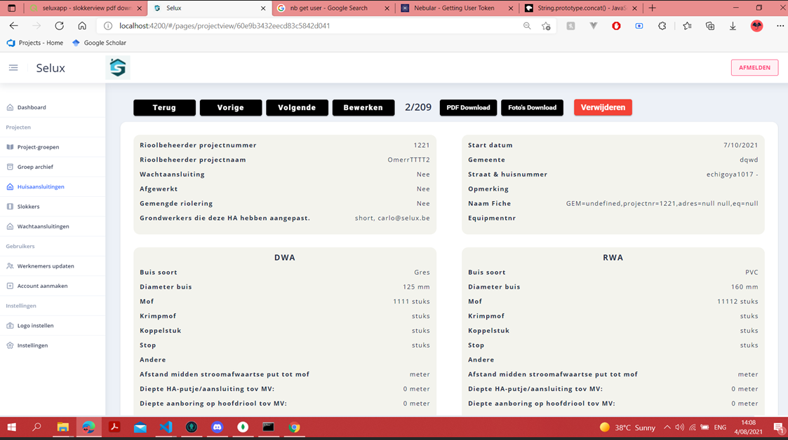

ACTIVITEIT VERSLAG

Selux riolerings applicatie
MEAN-stack
FOTO'S

Tabel met filter functies voor admins

Ionic registratie formulier

Foto's en popups

NodeJs code voor updaten van een project

DWA & RWA projecten aanmaken/bewerken